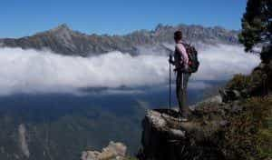
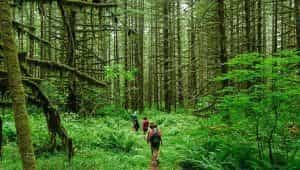
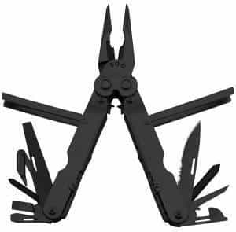
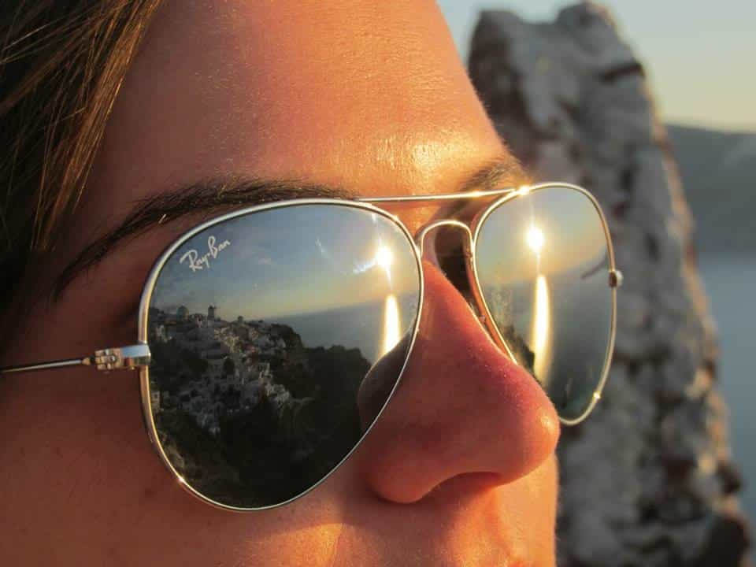

Quintus can be found at qcurtius.com. He is the author of the books On Duties, Thirty Seven, Sallust: The Conspiracy Of Catiline And The War Of Jugurtha, and other books. His work has been reviewed at Taki's Magazine. He can be followed on Twitter


Summer is a time for outdoor activity. Many of us will find ourselves hiking, camping, or just going on long walks. I thought this would be a good opportunity to make up a list of what I consider the most important things a hiker should have in his possession.
You will develop a healthy respect for both Nature and Fortune if you spend time outdoors. Nature gives much, but she is neutral when it comes to protecting our safety. Fortune is also fickle. You need to be prepared if things go wrong, because they usually will go wrong. The following is only a list of my own ideas.
It is a sad fact that many people today have no idea how to use a map and compass. The GPS is a great tool, but if you lose it, you will need to know how to use the old-school tools. Let’s begin with maps. You should have a couple of them that completely cover the area you are hiking in. You need topographical maps that show contours, scales, and distances, not the junk “maps” you find in guidebooks or hotels.

The U.S. Geological Survey is one of the few government agencies that has its act together: go to their site and get the maps you need. Make sure you get more than one, and laminate them for durability in the field. Make sure you get maps with the right scale for the job. In general, scales of 1:62,500 or better are good for hiking. The National Geographic Trails Illustrated series also makes great maps.
Land navigation is a subject near and dear to my heart. A lot of time is spent teaching the subject to Marine lieutenants, and even after twenty-five years, I still remember most of the important points. I’m not going to go over all the arcane things like “shooting azimuths” and other topics, but you should at least know how to orient (or “orientate”) a map.
First, you need a good compass. Get one of those compasses used for orienteering (Silva makes the best ones). Remember that magnetic north and true north are not the same. “Magnetic declination” is the name for the angle between the two. Most good maps will have this in the legend. You must remember to correct for magnetic declination. With some compasses, you can do it by setting the compass itself. If not, then you’ll need to remember to add or subtract the declination. It’s just like adding or subtracting a correction factor.
If the declination is given as west, just add the declination to zero degrees. If the declination is given as east, then subtract the declination number from zero. Use the memory device: east is least to remember this point.
When you orient a map, you are just making sure that what appears on the map corresponds with what you see in front of you. The idea is that the map should be lined up with “true north.” Put the compass on the map, and rotate both of them together so that the compass needle and the orienting arrow on the map are in alignment.

You never know when you will need these. I like small Maglites. Remember to bring spare batteries. Some guys swear by headlamps, and that’s fine, but I’m not convinced you need them for regular hiking.
No matter what happens, you will get hungry. No one ever hiked around all day and said they were not hungry. I’m personally partial to military surplus MREs (meals ready to eat), but they seem to be a lot more expensive now than they used to be. Check out military surplus stores and see what you can find there. They have come a long way in twenty-five years, believe me. The days of the freeze-dried hocky-puck “pork patty” are long gone.
I also like to bring a lot of dried meat. I make my own, actually, and you’d be surprised how easy it is. Just get a cheap cut of meat, slice it into thin strips, and marinate in a mix of liquid smoke, soy sauce, red pepper flake, and teriyaki sauce. Hang on a rack and dry in front of a blowing fan. Beef jerky is one of man’s great inventions.

You will swear by these things after a few long hikes. Gerber and Leatherman seem to be the most popular, and both of them work well. At the very minimum it should have a decent knife blade, a saw, pliers, ruler, and a can opener. Cork-screws are useless, by the way. A decent Swiss Army knife will still work in an emergency. Better still would be to take both.

People usually end up going overboard with this piece of gear. Unless you’re going to be out for more than a day, you don’t need syringes, splints, and complicated medical items. What you do need is a first aid kit that can deal with blisters, cuts, scrapes, burns, insect bites, or bad allergy issues. On the other hand, if you are out in the field for more than a day, be sure to have a more extensive medical kit. The kit should have bandages, painkillers, bandages, gauze pads, antibiotic creams, and moleskin. I like to pack everything in Tupperware containers for waterproofing. Make sure your kit has a signaling device of some kind (e.g., a mirror).
Bring this or some other reliable rain protection. Ponchos are better, though, since you can lie on them.
Lots of choices here. Windproof lighters are generally fine, but you can also get flint and steel kits, or waterproof matches in plastic cases. They all work.

You’d be surprised how important these are. My favorite sunscreen now is one you can buy at CVS Pharmacy. It’s called “Sport Sunstick” and has a broad spectrum SPF 55. It doesn’t sweat off, it’s water resistant, and is hypoallergenic. It also comes in a small Chapstick-style plastic tube for ease of carrying. Great stuff.
Nobody like insects swarming over them. From what I’ve read, the most effective ingredient in keeping insects off you is something called DEET. The best general one for me is “Deep Woods Off!,” which has DEET and can be easily applied with an aerosol spray.
I hope these suggestions help. One final word. I won’t add it to this list, but also think—just maybe—about taking some self-defense weapon with you. Doesn’t necessarily have to be a firearm. Use your imagination. You just never know. And make sure you comply with all state, federal, and local laws in the process.
Read More: The Most Important Trait That Leads Men To Success